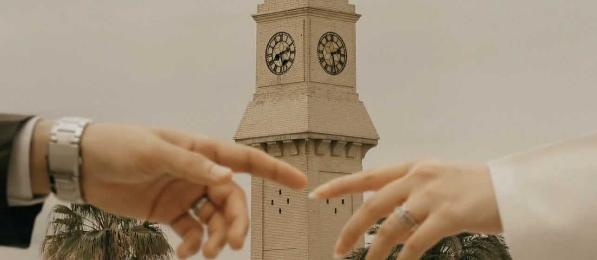

プラン 1 · $2,500
イラク遺産巡りツアー：7日間 / 6泊
バグダッド · バビロン · カルバラ · ナジャフ · ウルク · バスラ · 湿地帯 · ウル · サーマッラー · モスル · ハトラ
発着：バグダッド国際空港

南のバビロン、ウル、湿地帯から、北のサーマッラー、ハトラ、モスル、エルビルまで。4★〜5★ホテルと専属ガイド付きの3つのプログラム。
今すぐ予約 →イラクは最初の都市、最初の文字、最初の法律が生まれた土地です。シュメールとバビロンのジッグラト、ナジャフ・カルバラー・サーマッラーの聖廟、今も息づく湿地帯、アッバース朝のバグダッド、エルビル城塞など、主要な見どころを巡る3つのプログラムをご用意しました。
ご希望の日程でご自身のグループだけのプライベートツアーにも、当社のグループ出発にもご参加いただけます。下記からご希望のプログラムをお選びください：バグダッドと近郊6日間、バグダッド発7日間、または南のバスラから北のエルビルまで9日間。
 掲載書籍Unforgotten: Ancient Cities from a Distant Past · 著者 William FrejAmazonで見る ↗
掲載書籍Unforgotten: Ancient Cities from a Distant Past · 著者 William FrejAmazonで見る ↗
現地で撮影したイラクの旅の様子をご覧ください。
日付をタップすると詳細と写真が開きます。写真をタップすると拡大表示されます。
バグダッド · バビロン · カルバラ · ナジャフ · ウルク · バスラ · 湿地帯 · ウル · サーマッラー · モスル · ハトラ
発着：バグダッド国際空港
バスラ · 湿地帯 · ウル · ナジャフ · カルバラ · バビロン · バグダッド · サーマッラー · ハトラ · モスル · ニムルド · エルビル
到着：バスラ空港 · 出発：エルビル空港
バグダッド · アカル・クーフ · マダーイン · サーマッラー · バビロン · ボルシッパ · キフル
発着：バグダッド国際空港
バグダッド国際空港に到着後、お出迎え。旅はハンムラビ王とネブカドネザル王の都バビロンから始まります。行列道路を歩き、イシュタル門と宮殿の基礎を見学し、ハンムラビ法典に思いを馳せます。続いてナブー神に捧げられたボルシッパのジッグラトを訪れ、預言者ヨブの廟に立ち寄ります。
夕方にカルバラに到着し、黄金のドーム、繊細なタイル装飾、深い精神性に満ちたイマーム・フセイン廟とアッバース廟を参拝します。カルバラ泊。
イラクにおけるイスラム史の礎をたどる一日。クーファでは、世界最古級のモスクで初期イスラム政権の拠点でもあったクーファの大モスク、イマーム・アリーの家、マイサム・アッタンマール廟を訪れます。
続いて千年以上の歴史を持つ地球最大の墓地ワーディ・アッサラームを歩き、最後にナジャフのイマーム・アリー廟へ。巨大な黄金のドームの下に世界中から巡礼者が集まります。ナジャフ泊。
南へ向かい、世界最初の本格的な都市であり文字発祥の地、ギルガメシュ叙事詩の舞台ウルクへ。その後「東洋のベニス」と呼ばれるバスラへ進みます。
チグリス川とユーフラテス川が合流して湾へと流れるシャットゥルアラブ川で夕日を眺め、木彫りのシャナシール様式の出窓が並ぶ旧市街を散策。スパイス、デーツ、布地があふれるグランドバザールで一日を締めくくります。バスラ泊。
バスラを出て、チグリス川とユーフラテス川が出会うクルナへ。伝説のアダムの木を見学します。その後、ユネスコ世界遺産のメソポタミア湿地帯へ入り、伝統的な小舟で葦原を進みます。水牛や、葦だけで建てられた迎賓の家ムディーフが見られます。
続いて4000年以上建ち続けるシュメールの傑作、ウルのジッグラトへ。午後は北上し、夕方にバグダッドに到着します。バグダッド泊。
北へ向かい、9世紀にアッバース朝の都だったサーマッラーへ。象徴は大モスクのらせん状のミナレット「マルウィヤ」で、スロープからは古都と周囲の砂漠を見渡せます。
輝く黄金のドームを持つアスカリ廟を訪れた後、モスルへ。北部の料理や伝統に触れるチャンスです。モスル泊。
チグリス川のほとりにあるモスル旧市街からスタート。伝統的な市場、石造りの家々、ハドバ・ミナレットのあるヌーリー・モスクを巡ります。続いてアッシリア王アッシュールナツィルパル2世の都ニムルドを訪れます。
この日のハイライトはユネスコ世界遺産のハトラ。神殿にはヘレニズムやローマの様式と東方の伝統が融合し、城壁が広大な砂漠の中にそびえています。夕方バグダッドに戻ります。バグダッド泊。
最終日は「平和の都」バグダッドに捧げる一日です。カーズィミーヤ廟から始め、旧市街を徒歩で散策します。歴史ある茶屋や市場、何世紀にもわたりアラブ文学の中心だったムタナッビー通りを巡り、キシュラ近くのチグリス川沿いでお茶を楽しみます。
午後は約3400年前に建てられ、今も平原にそびえるカッシートのアカル・クフのジッグラトを訪れ、その後バグダッド国際空港へお送りします。
以下の日程で少人数グループにご参加いただけます。料金は同じく1名$2,500（2名1室利用）です。
バスラ国際空港に到着後、お出迎えしてホテルへ。昼食後、イラク最大の港町を巡ります。さまざまな共同体が出会ってきたバスラの長い歴史を物語るアルメニア聖母マリア教会、そして川沿いの旧宮殿を利用したバスラ博物館では、シュメールやバビロンからイスラム時代までの南部の歴史をたどります。
夕方は中心街とシャットゥルアラブ川沿いを散策し、ヤシ林に沈む夕日を眺めます。バスラ泊。
早朝に出発し、ユネスコ世界遺産のメソポタミア湿地帯へ。葦の小島、水牛、静かな水路が広がり、湿地のアラブ人が何千年も暮らしながら、葦だけでアーチ形の迎賓の家ムディーフを建ててきました。
続いて紀元前3千年紀のシュメールの都市ウルへ行き、4000年以上建ち続ける大ジッグラトに登ります。午後は北上してナジャフへ。ナジャフ泊。
ナジャフでは、世界中の巡礼者で埋まる中庭に囲まれた黄金のドームのイマーム・アリー廟と、近くにある地球最大級の墓地ワーディ・アッサラームを訪れます。クーファでは世界最古級のモスクのひとつ、大モスクを見学します。
その後カルバラ（80km）へ向かい、広い広場をはさんで向かい合うイマーム・フセイン廟とアッバース廟を参拝します。きらめくドームと繊細なタイル装飾が見事です。カルバラ泊。
短いドライブ（55km）で、ユネスコ世界遺産であり古代世界で最も有名な都市のひとつ、バビロンへ。行列道路を歩き、復元されたイシュタル門とネブカドネザル王の宮殿の基礎を見学し、ハンムラビ法典に思いを馳せます。
ボルシッパでは知恵の神ナブーのジッグラトの前に立ち、預言者ヨブの廟に立ち寄ります。午後はバグダッド（115km）へ進み、首都の夜の散策で一日を終えます。バグダッド泊。
首都をまる一日観光します。ラシード通りに沿って旧市街の歴史地区を歩き、街の本市場ムタナッビー通りと、チグリス川沿いに立つオスマン時代のキシュラ時計塔へ。ターコイズ色のドームが二つに割れた殉教者記念碑と、イラクで最も美しい聖廟のひとつである黄金のカーズィミーヤ廟を訪れます。
午後は郊外へ向かい、約3400年前にカッシート人が建て、今も平原にそびえるアカル・クフのジッグラトを訪れます。夜は自由行動。バグダッド泊。
早朝に北へ出発し、9世紀にアッバース朝の都でありユネスコ世界遺産でもあるサーマッラー（130km）へ。象徴は大モスクの高さ52mのらせん状ミナレット「マルウィヤ」で、アスカリ廟の黄金のドームも見学します。
続いてパルティア時代の城塞化された隊商都市ハトラへ。神殿には広大な砂漠の中でヘレニズム、ローマ、東方の様式が融合しています。夕方モスルに到着します。この日はプランの中で最も移動距離が長い日です。モスル泊。
チグリス川のほとりのモスル旧市街からスタート。伝統的な市場、石造りの家々、そして有名な傾いたミナレット「ハドバ」を持つヌーリー大モスクを巡ります。続いてニムルド（40km）へ。かつて翼を持つラマッスに守られた宮殿があった、アッシリア王アッシュールナツィルパル2世の都です。
次はアルファフ山の高みに4世紀に創建されたシリア正教のマール・マタイ修道院へ。ニネヴェ平原を一望できます。夕方エルビルへ向かいます。エルビル泊。
クルディスタン地域の首都で過ごす一日。歴史地区を歩き、何千年も人が住み続けてきた丘の上に立つユネスコ世界遺産のエルビル城塞へ登ります。その麓には、スパイス、お菓子、布地、地元の工芸品が並ぶ屋根付き市場カイサリー・バザールがあります。
エルビル文明博物館を訪れ、シャナダル公園でくつろぎます。夜は自由行動で、街のカフェやレストランをお楽しみください。エルビル泊。
ホテルで朝食後チェックアウトし、帰国便のためエルビル国際空港へお送りします。二つの川の間の国に別れを告げます。
以下の日程で少人数グループにご参加いただけます。料金は同じく1名$3,400（2名1室利用）です。
いつでもバグダッド国際空港に到着可能です。到着ロビーでガイドがお出迎えし、専用車でホテルへご案内します。初日は自由日でごゆっくりお休みください。ご希望の方は、夜にカーディミヤを追加料金なしで訪問できます。バグダッド泊。
いつでもバグダッド国際空港に到着可能です。到着ロビーでガイドがお出迎えし、専用車でホテルへご案内します。初日は自由日でごゆっくりお休みください。ご希望の方は、夜にカーディミヤを追加料金なしで訪問できます。バグダッド泊。
シュメール、アッカド、バビロン、アッシリアの楔形文字粘土板から巨大彫刻までを収蔵するイラク国立博物館から一日が始まります。午後は旧市街を散策：本の市場で知られるムタナッビー通り、回廊と時計塔のあるキシュラを訪れ、歴史あるカフェでお茶を楽しみます。バグダッド泊。
シュメール、アッカド、バビロン、アッシリアの楔形文字粘土板から巨大彫刻までを収蔵するイラク国立博物館から一日が始まります。午後は旧市街を散策：本の市場で知られるムタナッビー通り、回廊と時計塔のあるキシュラを訪れ、歴史あるカフェでお茶を楽しみます。バグダッド泊。
西へ向かい、約3400年前に建てられ今も平原にそびえるカッシート朝のジッグラト、アカル・クーフへ。帰り道に中世バグダッドで唯一現存する城門バーブ・アル・ワスターニーに立ち寄り、南のマダーインで6世紀のササン朝の巨大アーチ、ターク・キスラを見学します。バグダッド泊。
西へ向かい、約3400年前に建てられ今も平原にそびえるカッシート朝のジッグラト、アカル・クーフへ。帰り道に中世バグダッドで唯一現存する城門バーブ・アル・ワスターニーに立ち寄り、南のマダーインで6世紀のササン朝の巨大アーチ、ターク・キスラを見学します。バグダッド泊。
北へ約125km、9世紀のアッバース朝の都サーマッラーへ。ムタワッキルの大モスクにある有名な螺旋状ミナレット「マルウィヤ」と、黄金のドームを持つアスカリー廟を見学し、旧市街を散策します。夕方バグダッドへ戻ります。バグダッド泊。
北へ約125km、9世紀のアッバース朝の都サーマッラーへ。ムタワッキルの大モスクにある有名な螺旋状ミナレット「マルウィヤ」と、黄金のドームを持つアスカリー廟を見学し、旧市街を散策します。夕方バグダッドへ戻ります。バグダッド泊。
南へ、ハンムラビとネブカドネザルの都バビロンへ。行列道路を歩き、イシュタル門と宮殿跡を見学します。ボルシッパでは知恵の神ナブーのジッグラトの前に立ち、その後ズル・キフル廟と預言者ヨブの廟を訪れます。夕方バグダッドへ戻ります。バグダッド泊。
南へ、ハンムラビとネブカドネザルの都バビロンへ。行列道路を歩き、イシュタル門と宮殿跡を見学します。ボルシッパでは知恵の神ナブーのジッグラトの前に立ち、その後ズル・キフル廟と預言者ヨブの廟を訪れます。夕方バグダッドへ戻ります。バグダッド泊。
朝食後、専用車でバグダッド国際空港へお送りします。
朝食後、専用車でバグダッド国際空港へお送りします。
厳選ホテルのダブルまたはツインルーム、毎日朝食付き。
全行程専用エアコン車、英語・ロシア語・アラビア語を話すプロのガイドが同行します。
日程内すべての観光地の入場料、必要な許可、空港での送迎。
朝バグダッドを出発し、その日のうちに戻ります。専用車利用、グループ全体で一つの料金です。
カーズィミーヤ廟 · アーザミーヤのアブー・ハニーファ・モスク · アブドゥルカーディル・ジーラーニー廟 · ジュナイド・バグダーディー廟 · バフルール廟
バグダッドの精神的な中心を、忘れられない一日で体験。カーズィミーヤの黄金のドームから、偉大なスーフィー聖者たちの静かな廟まで、どの場所にも千年にわたる信仰と芸術、そしておもてなしの心が息づいています。初めての方にも巡礼の方にもおすすめです。
バグダッドを代表する聖廟を一日かけて巡ります。これらの聖地は千年以上にわたり、イスラム世界の各地から人々を引き寄せてきました。ティグリス川の両岸を結び、西岸のカーズィミーヤから東岸のアーザミーヤ、バーブ・アッシャイフへ。最後はカルフ地区にある初期スーフィー聖者たちの静かな廟を訪れます。
まずはカーズィミーヤ廟へ。イマーム・ムーサー・カーズィムとその孫イマーム・ムハンマド・ジャワード（彼らに平安あれ）が眠る聖地です。二つの黄金のドーム、四本の黄金のミナレット、青いタイルと鏡細工で飾られた回廊は、イラクで最も美しい景観のひとつです。川を渡ったアーザミーヤでは、8世紀の偉大な法学者で、その法学派を今も何百万人ものムスリムが信奉するイマーム・アブー・ハニーファ・ヌウマーンのモスクを訪れます。時計塔でもよく知られています。
バーブ・アッシャイフ地区では、12世紀の学者でカーディリー教団の創始者、シャイフ・アブドゥルカーディル・ジーラーニーのモスクと廟へ。世界中から訪問者が集まります。最後にカルフ地区で、初期スーフィズムで最も影響力のあった師の一人ジュナイド・バグダーディーの廟（叔父であり師でもあるサリー・サカティーの隣に眠ります）と、カリフのハールーン・アッラシードへの機知に富んだ教えで知られる賢者バフルールの青いドームの廟を訪れます。
バグダッドの宿泊先まで専用車でお迎えし、お送りします。料金はグループ全体で一つです。控えめな服装が必要で、女性はカーズィミーヤ廟に入る際にアバーヤを着用します（お手伝いします）。ガイドはアラビア語・英語・ロシア語を話します。
アカル・クーフのドゥル・クリガルズのジッグラト
バグダッドからわずか30分、平原にそびえる3400年前のジッグラト。その足元に立つことができます。日干しレンガと葦のマットを重ねて築かれたこの建物は、数々の帝国よりも長く生き残ってきました。本物のメソポタミアの驚異へ、気軽に行ける短い旅。朝や夕暮れのゴールデンアワーには最高の写真が撮れます。長いドライブも人混みもなく、あなたと歴史だけの時間です。
バグダッドの西およそ30キロに、アカル・クフのジッグラトがそびえています。イラクで最も保存状態のよいジッグラトのひとつで、首都から最も近い場所にあります。ここはかつてドゥル・クリガルズという都市で、紀元前14世紀にカッシート朝の王クリガルズ1世が王都として、また神エンリルの大神殿として築きました。
まず驚かされるのはその造り方です。ジッグラトは日干しレンガで築かれ、数段ごとにアスファルトを染み込ませた葦のマットが敷かれ、太い葦の縄が全体を束ねています。今も壁にはっきり見えるこの技術こそが、三千年以上も風雨に耐えてきた秘密です。現在残る部分も平原から約50メートルの高さがあり、到着するずっと前から姿が見えてきます。
ジッグラトの基部をぐるりと歩き、正面の復元された階段を上ります。ガイドが、ジッグラトの造り方、なぜ段状に高くなっていたのか、そして天と地をつなぐ存在としてメソポタミアの都市生活の中でどんな役割を果たしていたのかを解説します。古代都市の発掘で見つかった宮殿や神殿の跡にも立ち寄ります。
短くて気軽なツアーなので、バグダッドでの時間が限られている方や、バビロンやウルを訪れる前にメソポタミア文明を手早く知りたい方にぴったりです。所要時間は約半日。早朝や夕暮れ前に出かければ、レンガが温かな黄金色に輝き、写真撮影に最高の光に出会えます。
バグダッドの宿泊先から専用車で送迎します。入場料込みで、料金はグループ全体でひとつの価格です。ガイドはアラビア語・英語・ロシア語を話し、道中いつでも質問にお答えします。
クテシフォンのアーチ（ターク・キスラー）· 教友サルマーン・ファーリスィー廟
人類が築いた最大の単一スパンのレンガアーチ、クテシフォンのアーチの下に立ってみてください。かつてペルシャの王たちが世界中の使節を迎えた場所です。その後は、何百万人もの人々に敬愛されるサルマーン・ファーリスィー廟の静けさへ。バグダッドから1時間以内で歴史の二大章をめぐる、気軽で心に残る半日旅です。
バグダッドの南東およそ35キロ、ティグリス川のほとりにアル・マダインがあります。古代世界ではクテシフォンの名で知られ、何世紀にもわたってササン朝ペルシアの首都であり、当時の世界有数の大都市でした。
最大の見どころはターク・キスラ。6世紀にホスロー1世（アヌーシルワーン）が建てたと伝わる王の謁見の間です。巨大なレンガのアーチは高さ約37メートルに達し、人類がこれまでに築いた単一スパンのレンガ造アーチとして最大級とされています。このアーチの下でササン朝の王たちは各国の使節を迎え、古い年代記には、金と宝石で織られた絨毯が広間の床を覆っていたと記されています。ブラインドアーチと装飾柱が並ぶ長いファサードの前に立ち、最盛期の姿に思いを馳せましょう。
7世紀、ムスリムの到来とともにアル・マダインは新たな時代を迎え、預言者の高名な教友サルマーン・ファーリシーがこの地の総督となりました。彼はここで亡くなり、葬られています。サルマーン・パークとして知られる彼の廟は、イラク内外から参詣者が訪れる静かな場所で、教友フザイファ・イブン・ヤマーンの墓もあります。ガイドが、真理を求めてペルシアを旅立ち、ついにメディナにたどり着いたサルマーンの物語をお話しします。
このツアーでは、古代ペルシア建築の壮大さと初期イスラム史の精神を一か所で味わえます。バグダッドから近く、数時間で回れるので、午前や午後の短いお出かけに最適です。
バグダッドの宿泊先から専用車で送迎し、料金はグループ全体でひとつの価格。ガイドがアラビア語・英語・ロシア語で歴史を解説します。
ムスタンスィリーヤ学院 · 銅細工市場 · バグダッド民俗博物館 · ラシード通り · ムタナッビー通り · キシュラ
一つの朝で十二世紀を歩く旅。銅細工のスーク、歴史あるカフェ、本の市場、そしてチグリス川の眺め。街の隅々まで知るガイドと一緒に、バグダッドを好きになる最高の方法です。
ティグリス川の東岸に、バグダッド旧市街の中心が広がります。762年にアッバース朝によって建設されたこの都は、わずか一世代で世界最大かつ最も学問の栄えた都市となり、「知恵の館」が置かれました。4〜5時間のプライベート徒歩ツアーで、12世紀にわたる歴史をひと朝で巡ります。
まずは1234年に完成した世界最古級の大学、ムスタンスィリーヤ学院へ。広い中庭と回廊、アッバース朝の精緻なレンガ装飾は圧巻です。続いてサファーフィール市場へ。屋根付きの路地には今も銅職人の槌音が響き、盆やコーヒーポットが手作業で打ち出され、彫られています。次にティグリス河畔のバグダッド民俗博物館へ。等身大のジオラマが、婚礼やコーラン学校、喫茶店、失われた職業など、かつての暮らしを再現しています。
20世紀バグダッドの目抜き通りだったラシード通りの柱廊を歩き、アラブ世界で最も有名な本の市場、ムタナッビー通りへ。1917年創業のシャーバンダル・カフェでお茶を飲み、川を見下ろす詩人ムタナッビーの像の前に立ちます。最後はオスマン時代の時計塔がそびえるキシュラの庭園へ。1921年、ファイサル1世がイラク国王に即位した場所です。金曜日には地区全体が詩と本と音楽で賑わいます。
バグダッド市内のご宿泊先までお迎えに上がり、ツアー後にお送りします。料金はすべての入場料込みで、グループ全体でひとつの料金です。ガイドはアラビア語・英語・ロシア語を話し、全行程に同行して物語を語り、職人たちを紹介し、最高の撮影スポットをご案内します。
二イマーム廟（アスカリー廟）· 螺旋ミナレット「マルウィヤ」· イマーム・アリー・ハーディーの幽閉所と隣接するカスル・アル・ビルカ · アブー・ドゥラフのミナレット
伝説のらせん状ミナレット「マルウィーヤ」に登り、ユネスコ世界遺産であるアッバース朝カリフのかつての都を一望。黄金のドーム、巨大なモスクの城壁、静かな路地が、サーマッラーをイラクで最も満足度の高い日帰り旅の一つにしています。
バグダッドの北およそ125キロ、ティグリス川東岸にあるサーマッラーは、アッバース朝のカリフ、ムウタスィムが836年に築いた都市です。彼はこの町を「スッラ・マン・ラアー（見る者は喜ぶ）」と名づけ、半世紀以上にわたりアッバース朝の首都となりました。現在、その考古都市はユネスコ世界遺産に登録されており、初期イスラム文明の首都として最もよく残る遺跡のひとつです。
まずはアスカリ廟へ。イマーム・アリー・ハーディーとイマーム・ハサン・アスカリーが眠る聖廟で、巨大な黄金のドーム、高くそびえるミナレット、青いタイルで飾られた門が印象的です。イラクで最も重要な聖地のひとつで、世界中から人々が訪れます。
続いて町のシンボル、マルウィーヤへ。9世紀半ばにカリフ・ムタワッキルが建てた大モスクのらせん状のミナレットで、このモスクはかつて世界最大のモスクでした。高さ約52メートルのマルウィーヤには外側をめぐるスロープがあり、頂上まで歩いて登れます。頂上からは、アーチの並ぶモスクの巨大な外壁、古代都市、周囲の平原が一望できます。忘れられない体験になるので、ゆっくり時間をかけてあらゆる角度から写真を撮ってください。
その後、イマーム・アリー・ハーディーの牢獄として知られる場所と隣接するカスル・アル・ビルカ宮殿を訪れ、イマームのサーマッラーでの日々についてお話しします。最後は町の北にあるアブー・ドゥラフ・モスクへ。マルウィーヤにならって造られた小ぶりのらせんミナレットがあり、人混みから離れた静かな場所で、写真にも最適です。
サーマッラーのツアーは丸一日かかります。朝にバグダッドの宿泊先を専用車で出発し、夕方にお送りします。入場料込みで、料金はグループ全体でひとつの価格。ガイドはアラビア語・英語・ロシア語を話します。
古代都市バビロンの遺跡
ハンムラビが治め、ネブカドネザルが伝説の都を築いた場所を歩きましょう。誰もが知るバビロンを自分の目で見る体験は一生ものです。青いイシュタル門、王の名が刻まれた当時のレンガ、有名なバビロンのライオン像。古代の物語が、触れて写真に撮れる本物の場所に変わる、快適なプライベート日帰り旅です。
バグダッドの南およそ85キロ、ヒッラの町の近くにあるバビロンは、古代世界で最も有名な都市であり、2019年にユネスコ世界遺産に登録されました。ハンムラビ王がここを治めて名高い法典を定め、ネブカドネザル2世が紀元前6世紀に壮麗な都を築き、アレクサンドロス大王がここで生涯を閉じました。
牡牛と竜で飾られた青いイシュタル門の復元門から入り、かつて盛大な新年祭の行列が通った行列道路を歩きます。今も楔形文字でネブカドネザルの名が刻印された当時のレンガ壁を目にし、ベルリンの博物館に展示されている本物の門の物語も聞くことができます。
続いて、広い広間や中庭が残る南宮殿を巡り、町のシンボルとなった巨大な玄武岩の像「バビロンのライオン」の前で足を止めます。ガイドが、世界七不思議のひとつ空中庭園、多くの研究者がバベルの塔の物語と結びつけるジッグラト、エテメンアンキ、そしてアレクサンドロスの到来後に建てられたギリシャ劇場についてお話しします。
ガイドは石を物語に変えてくれます。約2600年前、地上最大の都市での暮らしはどのようなものだったのか。天文学や数学、法がどのようにここで花開いたのか。そしてなぜバビロンの名が今も人類の記憶に生き続けているのか。
歴史好きからご家族連れまで誰でも楽しめ、体力もさほど必要ありません。朝にバグダッドの宿泊先を専用車で出発し、午後にお送りします。入場料込みで、料金はグループ全体でひとつの価格。ガイドはアラビア語・英語・ロシア語を話します。
バビロン · ボルシッパのジッグラト · 預言者ヨブ廟 · ズル・キフル廟
バビロン地域を最も充実して巡る一日。世界的に有名な遺跡、謎めいたガラス化したボルシッパのジッグラト、そしてイラク最古級の二つの聖廟を、ひとつのスムーズな行程で。よく計画された一日でできるだけ多くを見たい方に最適です。
バビロン地方を最も充実して巡るツアーです。古代メソポタミアを代表する遺跡と、イラクでも特に古い二つの聖廟を一日で訪ねます。いずれもバグダッドの南、ヒッラからキフルへと続く一本の道沿いにあります。
まずはユネスコ世界遺産の古代都市バビロンへ。青いイシュタル門、行列道路、ネブカドネザルの南宮殿、そして有名なバビロンのライオンを見学します。ハンムラビ王と法典、空中庭園の伝説の話を聞きながら、今も楔形文字で王の名が刻まれた当時のレンガを目にすることができます。
次はボルシッパ、現在のビルス・ニムルドへ。知恵と書記の神ナブーの神殿のジッグラトの遺構が、平らな大地の上にそびえています。頂上には、古代に猛烈な熱で溶けてガラス状になった巨大なレンガの塊が横たわり、その不思議な光景は訪れる人を魅了します。この場所をバベルの塔の物語と結びつける人も多くいます。
続いて、宗教的伝統の中で忍耐の象徴とされる預言者ヨブ（アイユーブ）の廟へ。果樹園に囲まれた静かな場所で、人々が祝福を求めて訪れる井戸があります。最後は、ユーフラテス川沿いの町キフルにある預言者ズル・キフルの廟へ。古いミナレットと装飾で知られる由緒ある聖地で、この地に暮らし、この場所を敬ってきたさまざまな信仰の人々の歴史が重なっています。
地域の古代史と宗教史をまとめて幅広く知ることができる、内容豊かな一日ツアーです。朝にバグダッドの宿泊先を専用車で出発し、夕方にお送りします。入場料込みで、料金はグループ全体でひとつの価格。ガイドはアラビア語・英語・ロシア語を話します。
ニップルのジッグラト · エンリルの神殿エクル
古代シュメルの宗教的中心。エンリルの神殿エクルとそのジッグラトがシュメル世界の中心に立っていました。バグダードから南へ約3時間、カーディシーヤ県のアファク近く。イラクでも最も重要な遺跡のひとつを訪れるプライベート日帰りツアーです。
ニップルは古代シュメルの宗教的中心地でした。政治の首都ではなく、シュメルの主神エンリルの聖都です。その神殿エクル（「山の家」）とジッグラトは、二千年以上にわたり王や神官の巡礼地となりました。
今日もジッグラトと神殿域の遺跡が、カーディシーヤ県アファク近くの平原に残っています。ディワーニーヤの近郊です。ご案内しながら、エクルがメソポタミアの精神的中心であったことを説明し、遺跡を歩く時間も十分にとります。
バグダード発のプライベート終日ツアーです。ホテルへお迎えし、南へ約3時間、遺跡を訪れたあと、当日中にバグダードへお戻しします。料金には入場券と、アラビア語・英語・ロシア語を話す運転手兼ガイド付きの専用車が含まれます。グループ全体の一括料金です。
クーファの大モスク · ナジャフのイマーム・アリー廟 · カルバラのイマーム・フサイン廟とアッバース廟
三つの聖地をめぐる、深く心に残る一日。クーファの大モスクからナジャフとカルバラの黄金の聖廟まで、イマーム・アリーとその家族の生涯をたどります。丁寧なガイドとともに巡る感動の旅で、多くの旅行者がイラク旅行のハイライトと語っています。
イラクのイスラム史で最も重要な三つの都市、クーファ、ナジャフ、カルバラーを一日で巡る心の旅です。イマーム・アリー・イブン・アビー・ターリブとその息子たちの生涯を、それを見守ってきた場所でたどります。
最初に訪れるのはクーファの大モスク。イスラム世界で最も古いモスクのひとつで、イマーム・アリーがクーファを首都に選んだ際、カリフ政権の拠点としました。彼はここで礼拝し、説教し、人々の裁きを行い、ラマダーン月に襲撃を受けたミフラーブ（礼拝壁龕）もここにあります。モスク内では、イマーム・フサインがクーファに派遣した使者ムスリム・イブン・アキールの廟などを訪ね、ガイドがイマームと、この町で共に暮らした教友たちの生涯についてお話しします。
次にナジャフへ。黄金のドームを戴き、タイルと鏡細工で飾られた広い中庭をもつイマーム・アリー廟は、イラクで最も神聖な場所のひとつです。周囲には市場や歴史ある宗教学院が並ぶ旧市街が広がります。世界最大級かつ最古級の墓地、ワーディ・アッサラームのそばも通ります。
最後はカルバラーで、イマーム・フサイン廟と弟アブー・ファドル・アッバース廟を訪れ、両廟を結ぶ広場「バイン・アル・ハラマイン」を歩きます。ガイドがカルバラーの物語と、毎年訪れる何百万もの人々にとってこの地が持つ意味を語ります。
ツアーは丸一日。朝にバグダッドの宿泊先を専用車で出発し、夜にお送りします。料金は1〜3名まで同じです。控えめな服装をおすすめします。女性は聖廟に入る際にアバヤを着用しますが、ご用意のお手伝いもいたします。ガイドはアラビア語・英語・ロシア語を話します。
ウルの大ジッグラト · メソポタミア湿地帯
4000年以上前のウルのジッグラトに登り、伝統的な舟マシューフでメソポタミアの湿地帯をゆったり進みます。葦の家や水牛の群れを眺めたあとは、焼き魚マスグーフの昼食を。古代の驚異と今も息づく伝統を一日で味わえます。
文明が生まれた場所、イラク南部への旅です。壮大なウルのジッグラトを訪ね、その後、数千年前とほとんど変わらない暮らしが続く水の楽園、湿原地帯へ向かいます。
最初はナーシリーヤ近くのシュメールの都市ウルへ。四千年以上前にウル・ナンム王が月の神ナンナのために築いたジッグラトが今も立っています。どっしりとした正面と幅広い上り階段をもつ、世界で最も完全に近い形で残るジッグラトのひとつです。階段を上って古代都市の遺跡を見渡したあと、1920年代の発掘で黄金の財宝や竪琴、装身具が見つかった王墓を訪れ、さらに「アブラハムの家」として知られる建物にも立ち寄ります。伝承ではウルは預言者アブラハムの生誕地とされています。
続いて、2016年にユネスコ世界遺産に登録された湿原へ。伝統的な細長い木造ボート「マシューフ」に乗り、高い葦と静かな水面の間の水路をゆっくり進みます。泳ぐ水牛や渡り鳥、小さな島に建つ葦の家が次々と現れます。見事なアーチをもつ葦造りの大きな客殿「ムディーフ」も訪れ、湿原の人々の暮らしと温かいもてなしに触れます。
昼食はイラクを代表する料理「マスグーフ」。直火のそばで伝統的な方法で焼き上げる魚料理です。昼食、マシューフでの舟遊び、ウルのジッグラトの入場料はすべて料金に含まれています。
南部はバグダッドから遠いため、早朝に出発し、夜に戻ります。長い一日ですが、その価値は十分にあります。バグダッドの宿泊先から専用車で往復し、料金はグループ全体でひとつの価格。ガイドはアラビア語・英語・ロシア語を話します。
アッシュール（カラット・シェルカット）· ハトラ · モスル旧市街とヌーリ・モスク · ニムルド
2日間 · モスルのラマダに1泊
バグダッドからアッシリア帝国の中心地をめぐる2日間のプライベートツアーです。夜明けにバグダッドを出発し、ティグリス川に沿って北上、アッシリア帝国発祥の地であり国家神の住まいでもあったユネスコ世界遺産アッシュール（カラット・シェルカット）へ。続いて草原を越え、二人のローマ皇帝の攻撃を退けたパルティア時代の城塞都市ハトラへ向かい、太陽神を祀る壮大な神殿を訪ねます。夕方モスルに到着し、ラマダ・ホテル・インターナショナルに宿泊します。
2日目はモスル旧市街を歩き、青灰色のモスル大理石で建てられた伝統家屋の路地をめぐり、再建された斜塔ミナレット「ハドバ」で知られるヌーリ・モスクを訪れます。その後南東へ約30km、アッシュールナツィルパル2世の都で有翼牡牛像の守護神の町、古代カルフことニムルドへ。楔形文字の刻まれたレンガや石が今も地面に残っています。夕方バグダッドへ戻ります。
料金はグループ全体の料金で、バグダッド発着の専用車、2日間のガイド、モスルのラマダ・ホテル・インターナショナル1泊（朝食付き）を含みます。 すべての遺跡の入場料も含まれています。

バグダッド国際空港の到着ロビーでお出迎えし、専用車でバグダッドのホテルまで直接お送りします。
サイフは1991年にイラクで生まれました。2010年にウクライナへ渡り、歯学を学んでポルタヴァ国立医科大学を卒業しました。旅行が大好きで、観光客として13か国を訪れ、イラクの本当の歴史を世界に伝えたいと考えています。イラクを訪れる観光客が増えていること、そしてこの仕事を愛していることから、現在はガイドを本業としています。英語・ロシア語・アラビア語で案内します。


はい。現在のイラクは観光客にとって安全な国です。当社のツアーでは、到着から出発までガイドとドライバーが同行し、冷房付きの専用車で移動します。ルート上の許可はすべて当社が手配します。
7日間ツアーはバグダッド発着で、バビロン、カルバラ、ナジャフ、ウルク、バスラ、湿地帯、ウル、サーマッラー、モスル、ハトラを巡ります。9日間ツアーはバスラ発エルビル着で、バスラ博物館、ニムルド、マール・マタイ修道院、エルビル2日間が加わります。
7日間ツアーは2名1室利用で1名US$2,500、9日間ツアーはUS$3,400です。生後1か月〜2歳のお子様は無料です。 プライベートツアーの1人部屋追加料金：540米ドル。
どちらもご用意しており、お好みでお選びいただけます。プライベートツアーはご希望の日に出発します。予約フォームに表示された日程のグループ出発にご参加いただくこともできます。
いいえ。国際線航空券、イラクビザ、昼食と夕食は含まれません。朝食付きホテル、交通、ガイド、入場料は含まれます。
多くの国の方はイラクのe-ビザをオンラインで申請できます。オンライン申請ができない国籍の方には、当社でフルツアーをご予約いただくことを条件に、300米ドルでビザを手配します。
前金はいただきません。e-ビザをオンラインで取得できる国籍の方、またはすでにビザをお持ちの方は、イラク到着時に全額をお支払いください。50%の前金が必要なのは、オンラインでe-ビザを申請できず、当社がビザを手配する場合のみです。残りは到着時にお支払いいただきます。
はい。キャンセルは無料です。
プロのガイドが英語、ロシア語、アラビア語でご案内します。
このページのフォームでプランを選び、ご連絡先をご入力ください。Fable TourのスタッフからWhatsAppでご連絡します。
預言者の孫イマーム・フセイン（彼に平安あれ）は、わずか72人の仲間とともに数千の軍勢に立ち向かい、自由の象徴となりました。
661年、イマーム・フセイン（彼に平安あれ）の兄ハサンは、ムスリム同士の流血を止めるためにムアーウィヤ・イブン・アビー・スフヤーンと和平を結びました。この年は「統一の年」として記憶されています。ハサンは670年ごろ、メディナで毒殺されました。イブン・サアドとバラーズリーは、妻のジャアダ・ビント・アシュアスが毒を盛ったと伝え、バラーズリーはそれがムアーウィヤの教唆によるものだったと付け加えています（イブン・カスィールなど、この点を疑問視する歴史家もいます）。数年後、ムアーウィヤは息子ヤズィードを後継者として認めさせました。カリフの位が初めて父から子へと受け継がれたのです。タバリーによれば、ヤズィードのもとから戻ったメディナの使節団は、彼が酒を飲み、犬と戯れ、礼拝を怠っていると語りました。イブン・カスィールも彼を快楽と酒に溺れた人物として描いています。預言者の高名な教友の息子たちの多くが忠誠の誓いを拒み、その先頭に立ったのがイマーム・フセイン・イブン・アリー（彼に平安あれ）とアブドゥッラー・イブン・ズバイルでした。
ムアーウィヤが亡くなると、ヤズィードはメディナ総督ワリード・イブン・ウトバに書状を送り、イマーム・フセイン（彼に平安あれ）、アブドゥッラー・イブン・ズバイル、アブドゥッラー・イブン・ウマルから、容赦なく忠誠の誓いを取り付けるよう命じました。ワリードは夜、イマーム・フセイン（彼に平安あれ）を呼び出しました。彼は一族の若者たちを伴って出向き、「私が声を荒げるのが聞こえたら、中に入れ」と言って彼らを門に待たせました。総督の傍らにはマルワーン・イブン・ハカムが座っていました。ワリードはムアーウィヤの死を告げ、ヤズィードへの忠誠を求めました。イマーム・フセイン（彼に平安あれ）は、自分のような者は密かに忠誠を誓うことはない、誓うなら民衆の前でだ、と答えました。
マルワーンはワリードに言いました。「今、誓いをせずに帰らせたら、二度とこのような機会はない。引き留めよ。誓えばよし、さもなくば首をはねよ」。イマーム・フセイン（彼に平安あれ）は立ち上がりました。「ザルカーの息子よ、私を殺すのはお前か、それとも彼か。神にかけて、お前は嘘をつき、罪を犯している」。そして総督に向き直って言いました。
「アミールよ、我らは預言の家、啓示の源、天使たちが行き交う場所である。神は我らによって始め、我らによって締めくくられた。ヤズィードは罪深い男であり、酒を飲み、神が尊いものとした命を奪い、公然と罪を犯している。私のような者は、彼のような者に忠誠を誓わない。だが朝を待とう。そうすれば、我らのどちらがカリフにふさわしいか分かるだろう」
そして彼は立ち去りました。ワリードはマルワーンの進言を退け、イマーム・フセイン（彼に平安あれ）を殺すことが代償なら、日の昇るところすべてを手に入れたいとは思わない、と語りました。
エジプトの作家アブドゥッラフマーン・シャルカーウィーは、戯曲『革命家フセイン』でこの場面を名高い一幕としました。ワリードは「求めているのはただ一言だけ。それを言えば無事に帰れる」と言います。イマーム・フセイン（彼に平安あれ）は答えます。一言は小さなものではない。一言によって人は天国に入り、一言によって火に投げ込まれる。言葉は人を導く光であり、自由の砦であり、託された預かりものであり、責任である。人の名誉とはその言葉なのだ。どうしてその言葉をヤズィードに売り渡せようか、と。
二晩後のラジャブ月28日、イマーム・フセイン（彼に平安あれ）は家族とともにメッカへ向かいました。
イマーム・フセイン（彼に平安あれ）が数か月メッカに滞在するあいだ、クーファ（現在のイラク）の人々から来訪を求める手紙が次々に届きました。彼は従兄弟のムスリム・イブン・アキールを先に送り、ムスリムは1万8千人が忠誠を誓ったと書き送りました。するとヤズィードはウバイドゥッラー・イブン・ズィヤードをクーファ総督に任命します。その圧力の下で人々は散り散りになり、ついにムスリムはひとり取り残されました。タウアという女性が彼をかくまいましたが、彼は裏切られ、戦った末に捕らえられ、宮殿の屋上で処刑されました。彼をもてなしたハーニー・イブン・ウルワも共に命を落としました。
イブン・アッバース、イブン・ウマルらはイラク行きを思いとどまるよう助言しました。それでも彼は巡礼の始まるまさにその時に出発しました。タバリーによれば、彼はイブン・ズバイルに、自分のせいでメッカの聖域が汚されるくらいなら、メッカの外で殺されるほうがよいと語ったといいます。道中、彼はムスリムの死を知りました。途中で加わったベドウィンたちには立ち去る自由を与え、彼らが去ると、アラビアから共に来た者たちだけが残りました。
フッル・イブン・ヤズィードが1,000騎を率いて行く手を阻みました。彼らはイマーム・フセイン（彼に平安あれ）をイブン・ズィヤードのもとへ連行する命令を受けていました。兵たちは渇きで疲れ果てており、イマーム・フセイン（彼に平安あれ）は兵士とその馬に水を与えるよう命じました。道すがら、彼はこう語りました。
「真理に従って行う者がいなくなり、偽りが禁じられなくなったのが、あなたがたには見えないのか」
フッルに付き添われた一行は、やがてユーフラテス川のほとりの平原に止まりました。その地の名はカルバラといいました。
ウマル・イブン・サアドが4,000の兵を率いて到着し、イブン・ズィヤードはさらに増援を送りました。戦いの3日前、500騎が川に配置され、イマーム・フセイン（彼に平安あれ）の陣営は水から断たれました。異母弟アッバースは夜、騎兵30・歩兵20を率いて突破し、水を満たした革袋を持ち帰りました。イマーム・フセイン（彼に平安あれ）とウマル・イブン・サアドの交渉は実を結びませんでした。9日、シムルがイブン・ズィヤードの命令を携えて到着します。その裁きに服するか、戦うか、と。
イマーム・フセイン（彼に平安あれ）はもう一晩の猶予を求めました。彼は仲間を集め、誓いから解き放ちました。「夜があなたがたを覆っている。それを利用して去りなさい。彼らが求めているのは私ひとりだ」。最初に答えたのはアッバースで、続いて一族が、そしてムスリム・イブン・アウサジャ、サアド・イブン・アブドゥッラー、ズハイル・イブン・カインら仲間たちが答えました。誰ひとり去ろうとはしませんでした。彼らは夜通し祈りを捧げました。
夜明けの礼拝の後、イマーム・フセイン（彼に平安あれ）は部下を整列させました。騎兵32、歩兵40。彼は敵軍に語りかけ、自らが預言者の血を引く者であることを思い起こさせました。すると、自らの行いを深く悔いたフッルが、イマーム・フセイン（彼に平安あれ）の側に移ってきました。イマーム・フセイン（彼に平安あれ）は彼に言いました。「あなたは母が名付けたとおり、自由人（フッル）だ。この世でも、来世でも」。フッルは倒れるまで戦いました。
仲間たちは一人また一人と倒れていきました。ムスリム・イブン・アウサジャ、ハビーブ・イブン・ムザーヒル、ズハイル・イブン・カイン。正午、アブー・スマーマ・サーイディーが礼拝の時を告げると、イマーム・フセイン（彼に平安あれ）は、降り注ぐ矢の下、なお立っている者たちを率いて「恐怖の礼拝」を行いました。
続いて預言者の一族が前に出ました。最初に倒れたのはイマーム・フセイン（彼に平安あれ）の息子アリー・アクバル。次いでハサンの息子カースィム。ある目撃者はこの少年の顔を三日月にたとえました。アッバースもまた、実の兄弟アブドゥッラー、ウスマーン、ジャアファルとともに倒れました。
イマーム・フセイン（彼に平安あれ）は幼い息子アブドゥッラーを膝に抱いて座っていました。バヌー・アサド族の男が矢を放ち、幼子は命を落としました。イマーム・フセイン（彼に平安あれ）は、その血を手のひらに受け止めました。
ひとり残ったイマーム・フセイン（彼に平安あれ）はなおも戦い、取り囲む者たちに突撃しては押し返しました。やがてシムルの指揮のもと、敵は彼を取り囲みました。ズルア・イブン・シャリークが斬りつけ、スィナーン・イブン・アナスが槍で突き、彼は倒れました。その首は切り落とされました。ウマル・イブン・サアドは10騎に命じて亡骸を馬で踏みにじらせ、天幕は略奪されました。息子アリー（ザイヌル・アービディーン）は病に伏していたため命を助けられました。イマーム・フセイン（彼に平安あれ）とともに、72人が命を落としました。
首級と女性、子どもたちはクーファへ連行されました。総督が勝ち誇ると、イマーム・フセイン（彼に平安あれ）の妹ザイナブは毅然と答えました。神は預言者によって私たちに栄誉を与えた、恥にまみれるのは悪を行う者であって、私たちではない、と。ダマスカスのヤズィードの宮廷では、イマーム・フセイン（彼に平安あれ）の娘の一人を求めたシリア人をたしなめ、それはあなたにもヤズィードにも許されないと告げました。後にヤズィードは一族をメディナへ帰しました。
ヤズィードの治世には、カアバさえも難を逃れませんでした。683年、フサイン・イブン・ヌマイル率いる彼の軍がメッカを包囲し、カアバは投石機で攻撃されて炎上しました。軍が撤退したのは、ヤズィードの死の知らせが届いてからでした。
イマーム・フセイン（彼に平安あれ）は倒れたその場所に葬られました。以来、その墓は巡礼者を引き寄せ、カルバラの町はその周りに広がりました。今日では毎年、数百万の人々がアルバイーンのために徒歩でこの地を訪れます。
シェイク・アブドゥルザフラ・カアビーは1909年ごろ生まれの、カルバラの説教師です。1959年のアーシューラーの日、彼はイマーム・フセイン（彼に平安あれ）の聖廟のそばで『マクタル』を朗誦し、その声はバグダッド放送を通じてイラク全土と湾岸諸国に流れました。以来、彼の声はイラクの家庭におけるアーシューラーの朝の音となりました。亡くなって数十年が経った今も、その語りを真似できた者はいません。
ナイー（哀悼の語り）は、イマーム・フセイン（彼に平安あれ）の物語を伝えるイラクの古い芸術です。楽器を使わず、悲しみの旋律にのせて語られ、古典アラビア語の散文と民衆の哀歌の詩が織り交ぜられます。目的は楽しませることではなく、聴く人にカルバラの場に居合わせていると感じさせることです。アラビア語が分からなくても大丈夫です。声が物語を運び、日本語の翻訳が残りを伝えてくれます。
この動画では、カアビーの声による『マクタル』の全編を日本語訳付きでご覧いただけます。
イマーム・フセイン（彼に平安あれ）が立ったその場所に立ち、二つの聖廟のあいだを歩いてみませんか。
私たちとカルバラを訪れるページの隅をドラッグするか、矢印でページをめくってください。
バビロンとウル、メソポタミアの湿地帯、カルバラーとナジャフの聖廟、あるいはバスラからアルビルまでの大周遊。アメリカ・カナダから直接カスタマーサービスにお電話いただけます。国際電話料金も時差の心配もありません。
お電話は英語で対応します。お名前・電話番号・旅行日程をお伝えいただければ折り返しご連絡します。緑のボタンからWhatsAppでもお問い合わせいただけます。
プランを選び、ご連絡先をご入力ください。Fable TourのスタッフがWhatsAppでご連絡し、日程と詳細を確認します。